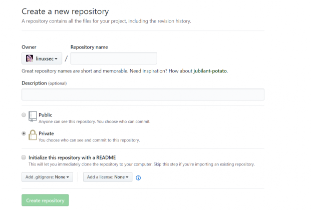

Mulai Sekarang, Private Repository di GitHub Bisa Dinikmati Secara Gratis. Di awal tahun 2019 ini kabar gembira datang dari GitHub. Beberapa waktu lalu saat perusahaan Microsoft mengakuisisi GitHub banyak orang khawatir fitur fitur yang sebelumnya gratis di GitHub akan di komersilkan. Hal itu pula yang membuat banyak developer berbondong bondong migrasi ke GitLab. Namun nampaknya yang terjadi justru sebaliknya karena mulai sekarang, private repsoitory di GitHub bisa dinikmati secara gratis. Terlebih lagi, tidak ada batasan berapa jumlah repository private yang boleh dibuat.
Seperti yang kita ketahui, sebelumnya GitHub menawarkan private repository dengan harga $7 per bulan. Siapa sangka kalau sekarang fitur tersebut bisa dinikmati secara gratis.
Untuk repositori GitHub yang bersifat publik akan tetap gratis seperti sebelumnya.
Dilansir dari The Register, Kathy Simpson, direktur senior produk di GitHub, saat ditanya apakah kantong Microsoft sudah cukup tebal hingga memutuskan untuk tidak “menjual” fitur Private Repository di GitHub lagi menjelaskan bahwa GitHub benar-benar bersemangat tentang GitHub Free dan mampu membawa repositori pribadi tanpa batas ke komunitas. Mereka ingin memudahkan developer untuk membangun perangkat lunak yang mereka inginkan terlepas dari di mana mereka berada dalam perjalanan mereka dan Microsoft sangat selaras dengan misi ini.
GitHub Pro (sebelumnya GitHub Developer) dan GitHub Team juga tersedia untuk pengembang dan tim yang membutuhkan pengkodean profesional dan fitur kolaborasi. Dan tentu saja, kontributor open source akan tetap memiliki semua yang mereka butuhkan untuk berkolaborasi dalam repositori publik, termasuk versi gratis dari GitHub Team.